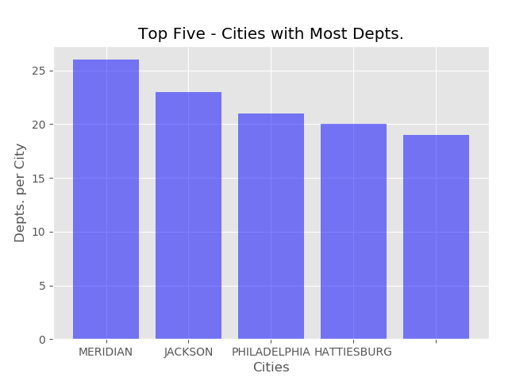

Virginia Arrests Dashboard
Created Virginia Arrests Dashboard with Tableau. The data is derived
from the Fairfax County Government website. A Python script was used to geocode
the data, and a Tableau dashboard provides a map and analytics for arrests in
Virginia for the 2018-2019 time frame.
Fire Department
Analysis
The script returns a State’s fire departments from the HIFLD API, and groups
fire departments by a variable such as City or Zip Code. The Pandas and
Mathplotlib libraries are used to group departments by the selected variable
and plot them in a graph. The example displays the top five Mississippi
cities with the highest number of fire departments.

Manage ArcGIS Online
user content
Temporary accounts in ArcGIS Online
accumulate orphaned maps, layers, and other content. The script iterates
through a list of users and their content, and attempts to remove
relationships between groups, layers, and apps in order to delete items.
If relationships are not removed and items cannot be directly deleted,
the content is reassigned to an admin and deleted.
Data finishing script to clean and augment datasets. Use Regular Expressions
and dictionaries to find and replace abbreviations and punctuation.
Use APIs add County FIPs codes from FCC API, geocode addresses from ESRI
world geocoder API, and fill in missing address fields with reverse geocoder.
Javascript App to provide real-time updates of conference sessions and
their locations. The app uses ESRI Javascript 3.5 API and several feature
services to provide a conference map and upcoming and current sessions
at a conference.